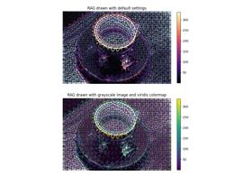

skimage.graph#
This moddule provides utilities for graph-based image processing.
This includes creating adjacency graphs of pixels in an image, finding the central pixel in an image, finding (minimum-cost) paths across pixels, merging and cutting of graphs, etc.
Find the pixel with the highest closeness centrality. |
|
Perform Normalized Graph cut on the Region Adjacency Graph. |
|
Combine regions separated by weight less than threshold. |
|
Perform hierarchical merging of a RAG. |
|
Create an adjacency graph of pixels in an image. |
|
Comouter RAG based on region boundaries |
|
Compute the Region Adjacency Graph using mean colors. |
|
Simple example of how to use the MCP and MCP_Geometric classes. |
|
Find the shortest path through an n-d array from one side to another. |
|
Show a Region Adjacency Graph on an image. |
|
A class for finding the minimum cost path through a given n-d costs array. |
|
Connect source points using the distance-weighted minimum cost function. |
|
Find minimum cost paths through an N-d costs array. |
|
Find distance-weighted minimum cost paths through an n-d costs array. |
|
The Region Adjacency Graph (RAG) of an image, subclasses |
- skimage.graph.central_pixel(graph, nodes=None, shape=None, partition_size=100)[source]#
Find the pixel with the highest closeness centrality.
Closeness centrality is the inverse of the total sum of shortest distances from a node to every other node.
- Parameters:
- graphscipy.sparse.csr_matrix
The sparse matrix representation of the graph.
- nodesarray of int
The raveled index of each node in graph in the image. If not provided, the returned value will be the index in the input graph.
- shapetuple of int
The shape of the image in which the nodes are embedded. If provided, the returned coordinates are a NumPy multi-index of the same dimensionality as the input shape. Otherwise, the returned coordinate is the raveled index provided in
nodes.- partition_sizeint
This function computes the shortest path distance between every pair of nodes in the graph. This can result in a very large (N*N) matrix. As a simple performance tweak, the distance values are computed in lots of
partition_size, resulting in a memory requirement of only partition_size*N.
- Returns:
- positionint or tuple of int
If shape is given, the coordinate of the central pixel in the image. Otherwise, the raveled index of that pixel.
- distancesarray of float
The total sum of distances from each node to each other reachable node.

Use pixel graphs to find an object’s geodesic center
Use pixel graphs to find an object's geodesic center
- skimage.graph.cut_normalized(labels, rag, thresh=0.001, num_cuts=10, in_place=True, max_edge=1.0, *, rng=None)[source]#
Perform Normalized Graph cut on the Region Adjacency Graph.
Given an image’s labels and its similarity RAG, recursively perform a 2-way normalized cut on it. All nodes belonging to a subgraph that cannot be cut further are assigned a unique label in the output.
- Parameters:
- labelsndarray
The array of labels.
- ragRAG
The region adjacency graph.
- threshfloat
The threshold. A subgraph won’t be further subdivided if the value of the N-cut exceeds
thresh.- num_cutsint
The number or N-cuts to perform before determining the optimal one.
- in_placebool
If set, modifies
ragin place. For each nodenthe function will set a new attributerag.nodes[n]['ncut label'].- max_edgefloat, optional
The maximum possible value of an edge in the RAG. This corresponds to an edge between identical regions. This is used to put self edges in the RAG.
- rng{
numpy.random.Generator, int}, optional Pseudo-random number generator. By default, a PCG64 generator is used (see
numpy.random.default_rng()). Ifrngis an int, it is used to seed the generator.The
rngis used to determine the starting point ofscipy.sparse.linalg.eigsh.
- Returns:
- outndarray
The new labeled array.
References
[1]Shi, J.; Malik, J., “Normalized cuts and image segmentation”, Pattern Analysis and Machine Intelligence, IEEE Transactions on, vol. 22, no. 8, pp. 888-905, August 2000.
Examples
>>> from skimage import data, segmentation, graph >>> img = data.astronaut() >>> labels = segmentation.slic(img) >>> rag = graph.rag_mean_color(img, labels, mode='similarity') >>> new_labels = graph.cut_normalized(labels, rag)

- skimage.graph.cut_threshold(labels, rag, thresh, in_place=True)[source]#
Combine regions separated by weight less than threshold.
Given an image’s labels and its RAG, output new labels by combining regions whose nodes are separated by a weight less than the given threshold.
- Parameters:
- labelsndarray
The array of labels.
- ragRAG
The region adjacency graph.
- threshfloat
The threshold. Regions connected by edges with smaller weights are combined.
- in_placebool
If set, modifies
ragin place. The function will remove the edges with weights less thatthresh. If set toFalsethe function makes a copy ofragbefore proceeding.
- Returns:
- outndarray
The new labelled array.
References
[1]Alain Tremeau and Philippe Colantoni “Regions Adjacency Graph Applied To Color Image Segmentation” DOI:10.1109/83.841950
Examples
>>> from skimage import data, segmentation, graph >>> img = data.astronaut() >>> labels = segmentation.slic(img) >>> rag = graph.rag_mean_color(img, labels) >>> new_labels = graph.cut_threshold(labels, rag, 10)

- skimage.graph.merge_hierarchical(labels, rag, thresh, rag_copy, in_place_merge, merge_func, weight_func)[source]#
Perform hierarchical merging of a RAG.
Greedily merges the most similar pair of nodes until no edges lower than
threshremain.- Parameters:
- labelsndarray
The array of labels.
- ragRAG
The Region Adjacency Graph.
- threshfloat
Regions connected by an edge with weight smaller than
threshare merged.- rag_copybool
If set, the RAG copied before modifying.
- in_place_mergebool
If set, the nodes are merged in place. Otherwise, a new node is created for each merge..
- merge_funccallable
This function is called before merging two nodes. For the RAG
graphwhile mergingsrcanddst, it is called as followsmerge_func(graph, src, dst).- weight_funccallable
The function to compute the new weights of the nodes adjacent to the merged node. This is directly supplied as the argument
weight_functomerge_nodes.
- Returns:
- outndarray
The new labeled array.


- skimage.graph.pixel_graph(image, *, mask=None, edge_function=None, connectivity=1, spacing=None)[source]#
Create an adjacency graph of pixels in an image.
Pixels where the mask is True are nodes in the returned graph, and they are connected by edges to their neighbors according to the connectivity parameter. By default, the value of an edge when a mask is given, or when the image is itself the mask, is the Euclidean distance between the pixels.
However, if an int- or float-valued image is given with no mask, the value of the edges is the absolute difference in intensity between adjacent pixels, weighted by the Euclidean distance.
- Parameters:
- imagearray
The input image. If the image is of type bool, it will be used as the mask as well.
- maskarray of bool
Which pixels to use. If None, the graph for the whole image is used.
- edge_functioncallable
A function taking an array of pixel values, and an array of neighbor pixel values, and an array of distances, and returning a value for the edge. If no function is given, the value of an edge is just the distance.
- connectivityint
The square connectivity of the pixel neighborhood: the number of orthogonal steps allowed to consider a pixel a neighbor. See
scipy.ndimage.generate_binary_structurefor details.- spacingtuple of float
The spacing between pixels along each axis.
- Returns:
- graphscipy.sparse.csr_matrix
A sparse adjacency matrix in which entry (i, j) is 1 if nodes i and j are neighbors, 0 otherwise.
- nodesarray of int
The nodes of the graph. These correspond to the raveled indices of the nonzero pixels in the mask.
Use pixel graphs to find an object’s geodesic center
Use pixel graphs to find an object's geodesic center
- skimage.graph.rag_boundary(labels, edge_map, connectivity=2)[source]#
Comouter RAG based on region boundaries
Given an image’s initial segmentation and its edge map this method constructs the corresponding Region Adjacency Graph (RAG). Each node in the RAG represents a set of pixels within the image with the same label in
labels. The weight between two adjacent regions is the average value inedge_mapalong their boundary.- labelsndarray
The labelled image.
- edge_mapndarray
This should have the same shape as that of
labels. For all pixels along the boundary between 2 adjacent regions, the average value of the corresponding pixels inedge_mapis the edge weight between them.- connectivityint, optional
Pixels with a squared distance less than
connectivityfrom each other are considered adjacent. It can range from 1 tolabels.ndim. Its behavior is the same asconnectivityparameter inscipy.ndimage.generate_binary_structure.
Examples
>>> from skimage import data, segmentation, filters, color, graph >>> img = data.chelsea() >>> labels = segmentation.slic(img) >>> edge_map = filters.sobel(color.rgb2gray(img)) >>> rag = graph.rag_boundary(labels, edge_map)

Region Boundary based Region adjacency graphs (RAGs)
Region Boundary based Region adjacency graphs (RAGs)
- skimage.graph.rag_mean_color(image, labels, connectivity=2, mode='distance', sigma=255.0)[source]#
Compute the Region Adjacency Graph using mean colors.
Given an image and its initial segmentation, this method constructs the corresponding Region Adjacency Graph (RAG). Each node in the RAG represents a set of pixels within
imagewith the same label inlabels. The weight between two adjacent regions represents how similar or dissimilar two regions are depending on themodeparameter.- Parameters:
- imagendarray, shape(M, N[, …, P], 3)
Input image.
- labelsndarray, shape(M, N[, …, P])
The labelled image. This should have one dimension less than
image. Ifimagehas dimensions(M, N, 3)labelsshould have dimensions(M, N).- connectivityint, optional
Pixels with a squared distance less than
connectivityfrom each other are considered adjacent. It can range from 1 tolabels.ndim. Its behavior is the same asconnectivityparameter inscipy.ndimage.generate_binary_structure.- mode{‘distance’, ‘similarity’}, optional
The strategy to assign edge weights.
‘distance’ : The weight between two adjacent regions is the \(|c_1 - c_2|\), where \(c_1\) and \(c_2\) are the mean colors of the two regions. It represents the Euclidean distance in their average color.
‘similarity’ : The weight between two adjacent is \(e^{-d^2/sigma}\) where \(d=|c_1 - c_2|\), where \(c_1\) and \(c_2\) are the mean colors of the two regions. It represents how similar two regions are.
- sigmafloat, optional
Used for computation when
modeis “similarity”. It governs how close to each other two colors should be, for their corresponding edge weight to be significant. A very large value ofsigmacould make any two colors behave as though they were similar.
- Returns:
- outRAG
The region adjacency graph.
References
[1]Alain Tremeau and Philippe Colantoni “Regions Adjacency Graph Applied To Color Image Segmentation” DOI:10.1109/83.841950
Examples
>>> from skimage import data, segmentation, graph >>> img = data.astronaut() >>> labels = segmentation.slic(img) >>> rag = graph.rag_mean_color(img, labels)
Drawing Region Adjacency Graphs (RAGs)
Drawing Region Adjacency Graphs (RAGs)
- skimage.graph.route_through_array(array, start, end, fully_connected=True, geometric=True)[source]#
Simple example of how to use the MCP and MCP_Geometric classes.
See the MCP and MCP_Geometric class documentation for explanation of the path-finding algorithm.
- Parameters:
- arrayndarray
Array of costs.
- startiterable
n-d index into
arraydefining the starting point- enditerable
n-d index into
arraydefining the end point- fully_connectedbool (optional)
If True, diagonal moves are permitted, if False, only axial moves.
- geometricbool (optional)
If True, the MCP_Geometric class is used to calculate costs, if False, the MCP base class is used. See the class documentation for an explanation of the differences between MCP and MCP_Geometric.
- Returns:
- pathlist
List of n-d index tuples defining the path from
starttoend.- costfloat
Cost of the path. If
geometricis False, the cost of the path is the sum of the values ofarrayalong the path. Ifgeometricis True, a finer computation is made (see the documentation of the MCP_Geometric class).
See also
Examples
>>> import numpy as np >>> from skimage.graph import route_through_array >>> >>> image = np.array([[1, 3], [10, 12]]) >>> image array([[ 1, 3], [10, 12]]) >>> # Forbid diagonal steps >>> route_through_array(image, [0, 0], [1, 1], fully_connected=False) ([(0, 0), (0, 1), (1, 1)], 9.5) >>> # Now allow diagonal steps: the path goes directly from start to end >>> route_through_array(image, [0, 0], [1, 1]) ([(0, 0), (1, 1)], 9.19238815542512) >>> # Cost is the sum of array values along the path (16 = 1 + 3 + 12) >>> route_through_array(image, [0, 0], [1, 1], fully_connected=False, ... geometric=False) ([(0, 0), (0, 1), (1, 1)], 16.0) >>> # Larger array where we display the path that is selected >>> image = np.arange((36)).reshape((6, 6)) >>> image array([[ 0, 1, 2, 3, 4, 5], [ 6, 7, 8, 9, 10, 11], [12, 13, 14, 15, 16, 17], [18, 19, 20, 21, 22, 23], [24, 25, 26, 27, 28, 29], [30, 31, 32, 33, 34, 35]]) >>> # Find the path with lowest cost >>> indices, weight = route_through_array(image, (0, 0), (5, 5)) >>> indices = np.stack(indices, axis=-1) >>> path = np.zeros_like(image) >>> path[indices[0], indices[1]] = 1 >>> path array([[1, 1, 1, 1, 1, 0], [0, 0, 0, 0, 0, 1], [0, 0, 0, 0, 0, 1], [0, 0, 0, 0, 0, 1], [0, 0, 0, 0, 0, 1], [0, 0, 0, 0, 0, 1]])
- skimage.graph.shortest_path(arr, reach=1, axis=-1, output_indexlist=False)[source]#
Find the shortest path through an n-d array from one side to another.
- Parameters:
- arrndarray of float64
- reachint, optional
By default (
reach = 1), the shortest path can only move one row up or down for every step it moves forward (i.e., the path gradient is limited to 1).reachdefines the number of elements that can be skipped along each non-axis dimension at each step.- axisint, optional
The axis along which the path must always move forward (default -1)
- output_indexlistbool, optional
See return value
pfor explanation.
- Returns:
- piterable of int
For each step along
axis, the coordinate of the shortest path. Ifoutput_indexlistis True, then the path is returned as a list of n-d tuples that index intoarr. If False, then the path is returned as an array listing the coordinates of the path along the non-axis dimensions for each step along the axis dimension. That is,p.shape == (arr.shape[axis], arr.ndim-1)except that p is squeezed before returning so ifarr.ndim == 2, thenp.shape == (arr.shape[axis],)- costfloat
Cost of path. This is the absolute sum of all the differences along the path.
- skimage.graph.show_rag(labels, rag, image, border_color='black', edge_width=1.5, edge_cmap='magma', img_cmap='bone', in_place=True, ax=None)[source]#
Show a Region Adjacency Graph on an image.
Given a labelled image and its corresponding RAG, show the nodes and edges of the RAG on the image with the specified colors. Edges are displayed between the centroid of the 2 adjacent regions in the image.
- Parameters:
- labelsndarray, shape (M, N)
The labelled image.
- ragRAG
The Region Adjacency Graph.
- imagendarray, shape (M, N[, 3])
Input image. If
colormapisNone, the image should be in RGB format.- border_colorcolor spec, optional
Color with which the borders between regions are drawn.
- edge_widthfloat, optional
The thickness with which the RAG edges are drawn.
- edge_cmap
matplotlib.colors.Colormap, optional Any matplotlib colormap with which the edges are drawn.
- img_cmap
matplotlib.colors.Colormap, optional Any matplotlib colormap with which the image is draw. If set to
Nonethe image is drawn as it is.- in_placebool, optional
If set, the RAG is modified in place. For each node
nthe function will set a new attributerag.nodes[n]['centroid'].- ax
matplotlib.axes.Axes, optional The axes to draw on. If not specified, new axes are created and drawn on.
- Returns:
- lc
matplotlib.collections.LineCollection A collection of lines that represent the edges of the graph. It can be passed to the
matplotlib.figure.Figure.colorbar()function.
- lc
Examples
>>> from skimage import data, segmentation, graph >>> import matplotlib.pyplot as plt >>> >>> img = data.coffee() >>> labels = segmentation.slic(img) >>> g = graph.rag_mean_color(img, labels) >>> lc = graph.show_rag(labels, g, img) >>> cbar = plt.colorbar(lc)
Region Boundary based Region adjacency graphs (RAGs)
Region Boundary based Region adjacency graphs (RAGs)Drawing Region Adjacency Graphs (RAGs)
Drawing Region Adjacency Graphs (RAGs)
- class skimage.graph.MCP(costs, offsets=None, fully_connected=True, sampling=None)#
Bases:
objectA class for finding the minimum cost path through a given n-d costs array.
Given an n-d costs array, this class can be used to find the minimum-cost path through that array from any set of points to any other set of points. Basic usage is to initialize the class and call find_costs() with a one or more starting indices (and an optional list of end indices). After that, call traceback() one or more times to find the path from any given end-position to the closest starting index. New paths through the same costs array can be found by calling find_costs() repeatedly.
The cost of a path is calculated simply as the sum of the values of the
costsarray at each point on the path. The class MCP_Geometric, on the other hand, accounts for the fact that diagonal vs. axial moves are of different lengths, and weights the path cost accordingly.Array elements with infinite or negative costs will simply be ignored, as will paths whose cumulative cost overflows to infinite.
- Parameters:
- costsndarray
- offsetsiterable, optional
A list of offset tuples: each offset specifies a valid move from a given n-d position. If not provided, offsets corresponding to a singly- or fully-connected n-d neighborhood will be constructed with make_offsets(), using the
fully_connectedparameter value.- fully_connectedbool, optional
If no
offsetsare provided, this determines the connectivity of the generated neighborhood. If true, the path may go along diagonals between elements of thecostsarray; otherwise only axial moves are permitted.- samplingtuple, optional
For each dimension, specifies the distance between two cells/voxels. If not given or None, the distance is assumed unit.
- Attributes:
- __init__(costs, offsets=None, fully_connected=True, sampling=None)#
See class documentation.
- find_costs(starts, ends=None, find_all_ends=True, max_coverage=1.0, max_cumulative_cost=None, max_cost=None)#
Find the minimum-cost path from the given starting points.
This method finds the minimum-cost path to the specified ending indices from any one of the specified starting indices. If no end positions are given, then the minimum-cost path to every position in the costs array will be found.
- Parameters:
- startsiterable
A list of n-d starting indices (where n is the dimension of the
costsarray). The minimum cost path to the closest/cheapest starting point will be found.- endsiterable, optional
A list of n-d ending indices.
- find_all_endsbool, optional
If ‘True’ (default), the minimum-cost-path to every specified end-position will be found; otherwise the algorithm will stop when a a path is found to any end-position. (If no
endswere specified, then this parameter has no effect.)
- Returns:
- cumulative_costsndarray
Same shape as the
costsarray; this array records the minimum cost path from the nearest/cheapest starting index to each index considered. (Ifendswere specified, not all elements in the array will necessarily be considered: positions not evaluated will have a cumulative cost of inf. Iffind_all_endsis ‘False’, only one of the specified end-positions will have a finite cumulative cost.)- tracebackndarray
Same shape as the
costsarray; this array contains the offset to any given index from its predecessor index. The offset indices index into theoffsetsattribute, which is a array of n-d offsets. In the 2-d case, if offsets[traceback[x, y]] is (-1, -1), that means that the predecessor of [x, y] in the minimum cost path to some start position is [x+1, y+1]. Note that if the offset_index is -1, then the given index was not considered.
- goal_reached(index, cumcost)#
int goal_reached(int index, float cumcost) This method is called each iteration after popping an index from the heap, before examining the neighbors.
This method can be overloaded to modify the behavior of the MCP algorithm. An example might be to stop the algorithm when a certain cumulative cost is reached, or when the front is a certain distance away from the seed point.
This method should return 1 if the algorithm should not check the current point’s neighbors and 2 if the algorithm is now done.
- offsets#
- traceback(end)#
Trace a minimum cost path through the pre-calculated traceback array.
This convenience function reconstructs the the minimum cost path to a given end position from one of the starting indices provided to find_costs(), which must have been called previously. This function can be called as many times as desired after find_costs() has been run.
- Parameters:
- enditerable
An n-d index into the
costsarray.
- Returns:
- tracebacklist of n-d tuples
A list of indices into the
costsarray, starting with one of the start positions passed to find_costs(), and ending with the givenendindex. These indices specify the minimum-cost path from any given start index to theendindex. (The total cost of that path can be read out from thecumulative_costsarray returned by find_costs().)
- class skimage.graph.MCP_Connect(costs, offsets=None, fully_connected=True)#
Bases:
MCPConnect source points using the distance-weighted minimum cost function.
A front is grown from each seed point simultaneously, while the origin of the front is tracked as well. When two fronts meet, create_connection() is called. This method must be overloaded to deal with the found edges in a way that is appropriate for the application.
- __init__(*args, **kwargs)#
- create_connection(id1, id2, tb1, tb2, cost1, cost2)#
create_connection id1, id2, pos1, pos2, cost1, cost2)
Overload this method to keep track of the connections that are found during MCP processing. Note that a connection with the same ids can be found multiple times (but with different positions and costs).
At the time that this method is called, both points are “frozen” and will not be visited again by the MCP algorithm.
- Parameters:
- id1int
The seed point id where the first neighbor originated from.
- id2int
The seed point id where the second neighbor originated from.
- pos1tuple
The index of of the first neighbor in the connection.
- pos2tuple
The index of of the second neighbor in the connection.
- cost1float
The cumulative cost at
pos1.- cost2float
The cumulative costs at
pos2.
- find_costs(starts, ends=None, find_all_ends=True, max_coverage=1.0, max_cumulative_cost=None, max_cost=None)#
Find the minimum-cost path from the given starting points.
This method finds the minimum-cost path to the specified ending indices from any one of the specified starting indices. If no end positions are given, then the minimum-cost path to every position in the costs array will be found.
- Parameters:
- startsiterable
A list of n-d starting indices (where n is the dimension of the
costsarray). The minimum cost path to the closest/cheapest starting point will be found.- endsiterable, optional
A list of n-d ending indices.
- find_all_endsbool, optional
If ‘True’ (default), the minimum-cost-path to every specified end-position will be found; otherwise the algorithm will stop when a a path is found to any end-position. (If no
endswere specified, then this parameter has no effect.)
- Returns:
- cumulative_costsndarray
Same shape as the
costsarray; this array records the minimum cost path from the nearest/cheapest starting index to each index considered. (Ifendswere specified, not all elements in the array will necessarily be considered: positions not evaluated will have a cumulative cost of inf. Iffind_all_endsis ‘False’, only one of the specified end-positions will have a finite cumulative cost.)- tracebackndarray
Same shape as the
costsarray; this array contains the offset to any given index from its predecessor index. The offset indices index into theoffsetsattribute, which is a array of n-d offsets. In the 2-d case, if offsets[traceback[x, y]] is (-1, -1), that means that the predecessor of [x, y] in the minimum cost path to some start position is [x+1, y+1]. Note that if the offset_index is -1, then the given index was not considered.
- goal_reached(index, cumcost)#
int goal_reached(int index, float cumcost) This method is called each iteration after popping an index from the heap, before examining the neighbors.
This method can be overloaded to modify the behavior of the MCP algorithm. An example might be to stop the algorithm when a certain cumulative cost is reached, or when the front is a certain distance away from the seed point.
This method should return 1 if the algorithm should not check the current point’s neighbors and 2 if the algorithm is now done.
- offsets#
- traceback(end)#
Trace a minimum cost path through the pre-calculated traceback array.
This convenience function reconstructs the the minimum cost path to a given end position from one of the starting indices provided to find_costs(), which must have been called previously. This function can be called as many times as desired after find_costs() has been run.
- Parameters:
- enditerable
An n-d index into the
costsarray.
- Returns:
- tracebacklist of n-d tuples
A list of indices into the
costsarray, starting with one of the start positions passed to find_costs(), and ending with the givenendindex. These indices specify the minimum-cost path from any given start index to theendindex. (The total cost of that path can be read out from thecumulative_costsarray returned by find_costs().)
- class skimage.graph.MCP_Flexible(costs, offsets=None, fully_connected=True)#
Bases:
MCPFind minimum cost paths through an N-d costs array.
See the documentation for MCP for full details. This class differs from MCP in that several methods can be overloaded (from pure Python) to modify the behavior of the algorithm and/or create custom algorithms based on MCP. Note that goal_reached can also be overloaded in the MCP class.
- __init__(costs, offsets=None, fully_connected=True, sampling=None)#
See class documentation.
- examine_neighbor(index, new_index, offset_length)#
This method is called once for every pair of neighboring nodes, as soon as both nodes are frozen.
This method can be overloaded to obtain information about neighboring nodes, and/or to modify the behavior of the MCP algorithm. One example is the MCP_Connect class, which checks for meeting fronts using this hook.
- find_costs(starts, ends=None, find_all_ends=True, max_coverage=1.0, max_cumulative_cost=None, max_cost=None)#
Find the minimum-cost path from the given starting points.
This method finds the minimum-cost path to the specified ending indices from any one of the specified starting indices. If no end positions are given, then the minimum-cost path to every position in the costs array will be found.
- Parameters:
- startsiterable
A list of n-d starting indices (where n is the dimension of the
costsarray). The minimum cost path to the closest/cheapest starting point will be found.- endsiterable, optional
A list of n-d ending indices.
- find_all_endsbool, optional
If ‘True’ (default), the minimum-cost-path to every specified end-position will be found; otherwise the algorithm will stop when a a path is found to any end-position. (If no
endswere specified, then this parameter has no effect.)
- Returns:
- cumulative_costsndarray
Same shape as the
costsarray; this array records the minimum cost path from the nearest/cheapest starting index to each index considered. (Ifendswere specified, not all elements in the array will necessarily be considered: positions not evaluated will have a cumulative cost of inf. Iffind_all_endsis ‘False’, only one of the specified end-positions will have a finite cumulative cost.)- tracebackndarray
Same shape as the
costsarray; this array contains the offset to any given index from its predecessor index. The offset indices index into theoffsetsattribute, which is a array of n-d offsets. In the 2-d case, if offsets[traceback[x, y]] is (-1, -1), that means that the predecessor of [x, y] in the minimum cost path to some start position is [x+1, y+1]. Note that if the offset_index is -1, then the given index was not considered.
- goal_reached(index, cumcost)#
int goal_reached(int index, float cumcost) This method is called each iteration after popping an index from the heap, before examining the neighbors.
This method can be overloaded to modify the behavior of the MCP algorithm. An example might be to stop the algorithm when a certain cumulative cost is reached, or when the front is a certain distance away from the seed point.
This method should return 1 if the algorithm should not check the current point’s neighbors and 2 if the algorithm is now done.
- offsets#
- traceback(end)#
Trace a minimum cost path through the pre-calculated traceback array.
This convenience function reconstructs the the minimum cost path to a given end position from one of the starting indices provided to find_costs(), which must have been called previously. This function can be called as many times as desired after find_costs() has been run.
- Parameters:
- enditerable
An n-d index into the
costsarray.
- Returns:
- tracebacklist of n-d tuples
A list of indices into the
costsarray, starting with one of the start positions passed to find_costs(), and ending with the givenendindex. These indices specify the minimum-cost path from any given start index to theendindex. (The total cost of that path can be read out from thecumulative_costsarray returned by find_costs().)
- travel_cost(old_cost, new_cost, offset_length)#
This method calculates the travel cost for going from the current node to the next. The default implementation returns new_cost. Overload this method to adapt the behaviour of the algorithm.
- update_node(index, new_index, offset_length)#
This method is called when a node is updated, right after new_index is pushed onto the heap and the traceback map is updated.
This method can be overloaded to keep track of other arrays that are used by a specific implementation of the algorithm. For instance the MCP_Connect class uses it to update an id map.
- class skimage.graph.MCP_Geometric(costs, offsets=None, fully_connected=True)#
Bases:
MCPFind distance-weighted minimum cost paths through an n-d costs array.
See the documentation for MCP for full details. This class differs from MCP in that the cost of a path is not simply the sum of the costs along that path.
This class instead assumes that the costs array contains at each position the “cost” of a unit distance of travel through that position. For example, a move (in 2-d) from (1, 1) to (1, 2) is assumed to originate in the center of the pixel (1, 1) and terminate in the center of (1, 2). The entire move is of distance 1, half through (1, 1) and half through (1, 2); thus the cost of that move is
(1/2)*costs[1,1] + (1/2)*costs[1,2].On the other hand, a move from (1, 1) to (2, 2) is along the diagonal and is sqrt(2) in length. Half of this move is within the pixel (1, 1) and the other half in (2, 2), so the cost of this move is calculated as
(sqrt(2)/2)*costs[1,1] + (sqrt(2)/2)*costs[2,2].These calculations don’t make a lot of sense with offsets of magnitude greater than 1. Use the
samplingargument in order to deal with anisotropic data.- __init__(costs, offsets=None, fully_connected=True, sampling=None)#
See class documentation.
- find_costs(starts, ends=None, find_all_ends=True, max_coverage=1.0, max_cumulative_cost=None, max_cost=None)#
Find the minimum-cost path from the given starting points.
This method finds the minimum-cost path to the specified ending indices from any one of the specified starting indices. If no end positions are given, then the minimum-cost path to every position in the costs array will be found.
- Parameters:
- startsiterable
A list of n-d starting indices (where n is the dimension of the
costsarray). The minimum cost path to the closest/cheapest starting point will be found.- endsiterable, optional
A list of n-d ending indices.
- find_all_endsbool, optional
If ‘True’ (default), the minimum-cost-path to every specified end-position will be found; otherwise the algorithm will stop when a a path is found to any end-position. (If no
endswere specified, then this parameter has no effect.)
- Returns:
- cumulative_costsndarray
Same shape as the
costsarray; this array records the minimum cost path from the nearest/cheapest starting index to each index considered. (Ifendswere specified, not all elements in the array will necessarily be considered: positions not evaluated will have a cumulative cost of inf. Iffind_all_endsis ‘False’, only one of the specified end-positions will have a finite cumulative cost.)- tracebackndarray
Same shape as the
costsarray; this array contains the offset to any given index from its predecessor index. The offset indices index into theoffsetsattribute, which is a array of n-d offsets. In the 2-d case, if offsets[traceback[x, y]] is (-1, -1), that means that the predecessor of [x, y] in the minimum cost path to some start position is [x+1, y+1]. Note that if the offset_index is -1, then the given index was not considered.
- goal_reached(index, cumcost)#
int goal_reached(int index, float cumcost) This method is called each iteration after popping an index from the heap, before examining the neighbors.
This method can be overloaded to modify the behavior of the MCP algorithm. An example might be to stop the algorithm when a certain cumulative cost is reached, or when the front is a certain distance away from the seed point.
This method should return 1 if the algorithm should not check the current point’s neighbors and 2 if the algorithm is now done.
- offsets#
- traceback(end)#
Trace a minimum cost path through the pre-calculated traceback array.
This convenience function reconstructs the the minimum cost path to a given end position from one of the starting indices provided to find_costs(), which must have been called previously. This function can be called as many times as desired after find_costs() has been run.
- Parameters:
- enditerable
An n-d index into the
costsarray.
- Returns:
- tracebacklist of n-d tuples
A list of indices into the
costsarray, starting with one of the start positions passed to find_costs(), and ending with the givenendindex. These indices specify the minimum-cost path from any given start index to theendindex. (The total cost of that path can be read out from thecumulative_costsarray returned by find_costs().)
- class skimage.graph.RAG(label_image=None, connectivity=1, data=None, **attr)[source]#
Bases:
GraphThe Region Adjacency Graph (RAG) of an image, subclasses
networkx.Graph.- Parameters:
- label_imagearray of int
An initial segmentation, with each region labeled as a different integer. Every unique value in
label_imagewill correspond to a node in the graph.- connectivityint in {1, …,
label_image.ndim}, optional The connectivity between pixels in
label_image. For a 2D image, a connectivity of 1 corresponds to immediate neighbors up, down, left, and right, while a connectivity of 2 also includes diagonal neighbors. Seescipy.ndimage.generate_binary_structure().- data
networkx.Graphspecification, optional Initial or additional edges to pass to
networkx.Graphconstructor. Valid edge specifications include edge list (list of tuples), NumPy arrays, and SciPy sparse matrices.- **attrkeyword arguments, optional
Additional attributes to add to the graph.
- __init__(label_image=None, connectivity=1, data=None, **attr)[source]#
Initialize a graph with edges, name, or graph attributes.
- Parameters:
- incoming_graph_datainput graph (optional, default: None)
Data to initialize graph. If None (default) an empty graph is created. The data can be an edge list, or any NetworkX graph object. If the corresponding optional Python packages are installed the data can also be a 2D NumPy array, a SciPy sparse array, or a PyGraphviz graph.
- attrkeyword arguments, optional (default= no attributes)
Attributes to add to graph as key=value pairs.
See also
convert
Examples
>>> G = nx.Graph() # or DiGraph, MultiGraph, MultiDiGraph, etc >>> G = nx.Graph(name="my graph") >>> e = [(1, 2), (2, 3), (3, 4)] # list of edges >>> G = nx.Graph(e)
Arbitrary graph attribute pairs (key=value) may be assigned
>>> G = nx.Graph(e, day="Friday") >>> G.graph {'day': 'Friday'}
Region Boundary based Region adjacency graphs (RAGs)
Region Boundary based Region adjacency graphs (RAGs)Drawing Region Adjacency Graphs (RAGs)
Drawing Region Adjacency Graphs (RAGs)
- add_edge(u, v, attr_dict=None, **attr)[source]#
Add an edge between
uandvwhile updating max node id.See also
- add_edges_from(ebunch_to_add, **attr)[source]#
Add all the edges in ebunch_to_add.
- Parameters:
- ebunch_to_addcontainer of edges
Each edge given in the container will be added to the graph. The edges must be given as 2-tuples (u, v) or 3-tuples (u, v, d) where d is a dictionary containing edge data.
- attrkeyword arguments, optional
Edge data (or labels or objects) can be assigned using keyword arguments.
See also
add_edgeadd a single edge
add_weighted_edges_fromconvenient way to add weighted edges
Notes
Adding the same edge twice has no effect but any edge data will be updated when each duplicate edge is added.
Edge attributes specified in an ebunch take precedence over attributes specified via keyword arguments.
When adding edges from an iterator over the graph you are changing, a
RuntimeErrorcan be raised with message:RuntimeError: dictionary changed size during iteration. This happens when the graph’s underlying dictionary is modified during iteration. To avoid this error, evaluate the iterator into a separate object, e.g. by usinglist(iterator_of_edges), and pass this object toG.add_edges_from.Examples
>>> G = nx.Graph() # or DiGraph, MultiGraph, MultiDiGraph, etc >>> G.add_edges_from([(0, 1), (1, 2)]) # using a list of edge tuples >>> e = zip(range(0, 3), range(1, 4)) >>> G.add_edges_from(e) # Add the path graph 0-1-2-3
Associate data to edges
>>> G.add_edges_from([(1, 2), (2, 3)], weight=3) >>> G.add_edges_from([(3, 4), (1, 4)], label="WN2898")
Evaluate an iterator over a graph if using it to modify the same graph
>>> G = nx.Graph([(1, 2), (2, 3), (3, 4)]) >>> # Grow graph by one new node, adding edges to all existing nodes. >>> # wrong way - will raise RuntimeError >>> # G.add_edges_from(((5, n) for n in G.nodes)) >>> # correct way - note that there will be no self-edge for node 5 >>> G.add_edges_from(list((5, n) for n in G.nodes))
- add_node(n, attr_dict=None, **attr)[source]#
Add node
nwhile updating the maximum node id.See also
- add_nodes_from(nodes_for_adding, **attr)[source]#
Add multiple nodes.
- Parameters:
- nodes_for_addingiterable container
A container of nodes (list, dict, set, etc.). OR A container of (node, attribute dict) tuples. Node attributes are updated using the attribute dict.
- attrkeyword arguments, optional (default= no attributes)
Update attributes for all nodes in nodes. Node attributes specified in nodes as a tuple take precedence over attributes specified via keyword arguments.
See also
Notes
When adding nodes from an iterator over the graph you are changing, a
RuntimeErrorcan be raised with message:RuntimeError: dictionary changed size during iteration. This happens when the graph’s underlying dictionary is modified during iteration. To avoid this error, evaluate the iterator into a separate object, e.g. by usinglist(iterator_of_nodes), and pass this object toG.add_nodes_from.Examples
>>> G = nx.Graph() # or DiGraph, MultiGraph, MultiDiGraph, etc >>> G.add_nodes_from("Hello") >>> K3 = nx.Graph([(0, 1), (1, 2), (2, 0)]) >>> G.add_nodes_from(K3) >>> sorted(G.nodes(), key=str) [0, 1, 2, 'H', 'e', 'l', 'o']
Use keywords to update specific node attributes for every node.
>>> G.add_nodes_from([1, 2], size=10) >>> G.add_nodes_from([3, 4], weight=0.4)
Use (node, attrdict) tuples to update attributes for specific nodes.
>>> G.add_nodes_from([(1, dict(size=11)), (2, {"color": "blue"})]) >>> G.nodes[1]["size"] 11 >>> H = nx.Graph() >>> H.add_nodes_from(G.nodes(data=True)) >>> H.nodes[1]["size"] 11
Evaluate an iterator over a graph if using it to modify the same graph
>>> G = nx.Graph([(0, 1), (1, 2), (3, 4)]) >>> # wrong way - will raise RuntimeError >>> # G.add_nodes_from(n + 1 for n in G.nodes) >>> # correct way >>> G.add_nodes_from(list(n + 1 for n in G.nodes))
- add_weighted_edges_from(ebunch_to_add, weight='weight', **attr)[source]#
Add weighted edges in
ebunch_to_addwith specified weight attr- Parameters:
- ebunch_to_addcontainer of edges
Each edge given in the list or container will be added to the graph. The edges must be given as 3-tuples (u, v, w) where w is a number.
- weightstring, optional (default= ‘weight’)
The attribute name for the edge weights to be added.
- attrkeyword arguments, optional (default= no attributes)
Edge attributes to add/update for all edges.
See also
add_edgeadd a single edge
add_edges_fromadd multiple edges
Notes
Adding the same edge twice for Graph/DiGraph simply updates the edge data. For MultiGraph/MultiDiGraph, duplicate edges are stored.
When adding edges from an iterator over the graph you are changing, a
RuntimeErrorcan be raised with message:RuntimeError: dictionary changed size during iteration. This happens when the graph’s underlying dictionary is modified during iteration. To avoid this error, evaluate the iterator into a separate object, e.g. by usinglist(iterator_of_edges), and pass this object toG.add_weighted_edges_from.Examples
>>> G = nx.Graph() # or DiGraph, MultiGraph, MultiDiGraph, etc >>> G.add_weighted_edges_from([(0, 1, 3.0), (1, 2, 7.5)])
Evaluate an iterator over edges before passing it
>>> G = nx.Graph([(1, 2), (2, 3), (3, 4)]) >>> weight = 0.1 >>> # Grow graph by one new node, adding edges to all existing nodes. >>> # wrong way - will raise RuntimeError >>> # G.add_weighted_edges_from(((5, n, weight) for n in G.nodes)) >>> # correct way - note that there will be no self-edge for node 5 >>> G.add_weighted_edges_from(list((5, n, weight) for n in G.nodes))
- property adj#
Graph adjacency object holding the neighbors of each node.
This object is a read-only dict-like structure with node keys and neighbor-dict values. The neighbor-dict is keyed by neighbor to the edge-data-dict. So
G.adj[3][2]['color'] = 'blue'sets the color of the edge(3, 2)to"blue".Iterating over G.adj behaves like a dict. Useful idioms include
for nbr, datadict in G.adj[n].items():.The neighbor information is also provided by subscripting the graph. So
for nbr, foovalue in G[node].data('foo', default=1):works.For directed graphs,
G.adjholds outgoing (successor) info.
- adjacency()[source]#
Returns an iterator over (node, adjacency dict) tuples for all nodes.
For directed graphs, only outgoing neighbors/adjacencies are included.
- Returns:
- adj_iteriterator
An iterator over (node, adjacency dictionary) for all nodes in the graph.
Examples
>>> G = nx.path_graph(4) # or DiGraph, MultiGraph, MultiDiGraph, etc >>> [(n, nbrdict) for n, nbrdict in G.adjacency()] [(0, {1: {}}), (1, {0: {}, 2: {}}), (2, {1: {}, 3: {}}), (3, {2: {}})]
- clear()[source]#
Remove all nodes and edges from the graph.
This also removes the name, and all graph, node, and edge attributes.
Examples
>>> G = nx.path_graph(4) # or DiGraph, MultiGraph, MultiDiGraph, etc >>> G.clear() >>> list(G.nodes) [] >>> list(G.edges) []
- clear_edges()[source]#
Remove all edges from the graph without altering nodes.
Examples
>>> G = nx.path_graph(4) # or DiGraph, MultiGraph, MultiDiGraph, etc >>> G.clear_edges() >>> list(G.nodes) [0, 1, 2, 3] >>> list(G.edges) []
- property degree#
A DegreeView for the Graph as G.degree or G.degree().
The node degree is the number of edges adjacent to the node. The weighted node degree is the sum of the edge weights for edges incident to that node.
This object provides an iterator for (node, degree) as well as lookup for the degree for a single node.
- Parameters:
- nbunchsingle node, container, or all nodes (default= all nodes)
The view will only report edges incident to these nodes.
- weightstring or None, optional (default=None)
The name of an edge attribute that holds the numerical value used as a weight. If None, then each edge has weight 1. The degree is the sum of the edge weights adjacent to the node.
- Returns:
- DegreeView or int
If multiple nodes are requested (the default), returns a
DegreeViewmapping nodes to their degree. If a single node is requested, returns the degree of the node as an integer.
Examples
>>> G = nx.path_graph(4) # or DiGraph, MultiGraph, MultiDiGraph, etc >>> G.degree[0] # node 0 has degree 1 1 >>> list(G.degree([0, 1, 2])) [(0, 1), (1, 2), (2, 2)]
- edge_subgraph(edges)[source]#
Returns the subgraph induced by the specified edges.
The induced subgraph contains each edge in
edgesand each node incident to any one of those edges.- Parameters:
- edgesiterable
An iterable of edges in this graph.
- Returns:
- GGraph
An edge-induced subgraph of this graph with the same edge attributes.
Notes
The graph, edge, and node attributes in the returned subgraph view are references to the corresponding attributes in the original graph. The view is read-only.
To create a full graph version of the subgraph with its own copy of the edge or node attributes, use:
G.edge_subgraph(edges).copy()
Examples
>>> G = nx.path_graph(5) >>> H = G.edge_subgraph([(0, 1), (3, 4)]) >>> list(H.nodes) [0, 1, 3, 4] >>> list(H.edges) [(0, 1), (3, 4)]
- property edges#
An EdgeView of the Graph as G.edges or G.edges().
edges(self, nbunch=None, data=False, default=None)
The EdgeView provides set-like operations on the edge-tuples as well as edge attribute lookup. When called, it also provides an EdgeDataView object which allows control of access to edge attributes (but does not provide set-like operations). Hence,
G.edges[u, v]['color']provides the value of the color attribute for edge(u, v)whilefor (u, v, c) in G.edges.data('color', default='red'):iterates through all the edges yielding the color attribute with default'red'if no color attribute exists.- Parameters:
- nbunchsingle node, container, or all nodes (default= all nodes)
The view will only report edges from these nodes.
- datastring or bool, optional (default=False)
The edge attribute returned in 3-tuple (u, v, ddict[data]). If True, return edge attribute dict in 3-tuple (u, v, ddict). If False, return 2-tuple (u, v).
- defaultvalue, optional (default=None)
Value used for edges that don’t have the requested attribute. Only relevant if data is not True or False.
- Returns:
- edgesEdgeView
A view of edge attributes, usually it iterates over (u, v) or (u, v, d) tuples of edges, but can also be used for attribute lookup as
edges[u, v]['foo'].
Notes
Nodes in nbunch that are not in the graph will be (quietly) ignored. For directed graphs this returns the out-edges.
Examples
>>> G = nx.path_graph(3) # or MultiGraph, etc >>> G.add_edge(2, 3, weight=5) >>> [e for e in G.edges] [(0, 1), (1, 2), (2, 3)] >>> G.edges.data() # default data is {} (empty dict) EdgeDataView([(0, 1, {}), (1, 2, {}), (2, 3, {'weight': 5})]) >>> G.edges.data("weight", default=1) EdgeDataView([(0, 1, 1), (1, 2, 1), (2, 3, 5)]) >>> G.edges([0, 3]) # only edges from these nodes EdgeDataView([(0, 1), (3, 2)]) >>> G.edges(0) # only edges from node 0 EdgeDataView([(0, 1)])
- fresh_copy()[source]#
Return a fresh copy graph with the same data structure.
A fresh copy has no nodes, edges or graph attributes. It is the same data structure as the current graph. This method is typically used to create an empty version of the graph.
This is required when subclassing Graph with networkx v2 and does not cause problems for v1. Here is more detail from the network migrating from 1.x to 2.x document:
With the new GraphViews (SubGraph, ReversedGraph, etc) you can't assume that ``G.__class__()`` will create a new instance of the same graph type as ``G``. In fact, the call signature for ``__class__`` differs depending on whether ``G`` is a view or a base class. For v2.x you should use ``G.fresh_copy()`` to create a null graph of the correct type---ready to fill with nodes and edges.
- get_edge_data(u, v, default=None)[source]#
Returns the attribute dictionary associated with edge (u, v).
This is identical to
G[u][v]except the default is returned instead of an exception if the edge doesn’t exist.- Parameters:
- u, vnodes
- default: any Python object (default=None)
Value to return if the edge (u, v) is not found.
- Returns:
- edge_dictdictionary
The edge attribute dictionary.
Examples
>>> G = nx.path_graph(4) # or DiGraph, MultiGraph, MultiDiGraph, etc >>> G[0][1] {}
Warning: Assigning to
G[u][v]is not permitted. But it is safe to assign attributesG[u][v]['foo']>>> G[0][1]["weight"] = 7 >>> G[0][1]["weight"] 7 >>> G[1][0]["weight"] 7
>>> G = nx.path_graph(4) # or DiGraph, MultiGraph, MultiDiGraph, etc >>> G.get_edge_data(0, 1) # default edge data is {} {} >>> e = (0, 1) >>> G.get_edge_data(*e) # tuple form {} >>> G.get_edge_data("a", "b", default=0) # edge not in graph, return 0 0
- has_edge(u, v)[source]#
Returns True if the edge (u, v) is in the graph.
This is the same as
v in G[u]without KeyError exceptions.- Parameters:
- u, vnodes
Nodes can be, for example, strings or numbers. Nodes must be hashable (and not None) Python objects.
- Returns:
- edge_indbool
True if edge is in the graph, False otherwise.
Examples
>>> G = nx.path_graph(4) # or DiGraph, MultiGraph, MultiDiGraph, etc >>> G.has_edge(0, 1) # using two nodes True >>> e = (0, 1) >>> G.has_edge(*e) # e is a 2-tuple (u, v) True >>> e = (0, 1, {"weight": 7}) >>> G.has_edge(*e[:2]) # e is a 3-tuple (u, v, data_dictionary) True
The following syntax are equivalent:
>>> G.has_edge(0, 1) True >>> 1 in G[0] # though this gives KeyError if 0 not in G True
- has_node(n)[source]#
Returns True if the graph contains the node n.
Identical to
n in G- Parameters:
- nnode
Examples
>>> G = nx.path_graph(3) # or DiGraph, MultiGraph, MultiDiGraph, etc >>> G.has_node(0) True
It is more readable and simpler to use
>>> 0 in G True
- merge_nodes(src, dst, weight_func=<function min_weight>, in_place=True, extra_arguments=None, extra_keywords=None)[source]#
Merge node
srcanddst.The new combined node is adjacent to all the neighbors of
srcanddst.weight_funcis called to decide the weight of edges incident on the new node.- Parameters:
- src, dstint
Nodes to be merged.
- weight_funccallable, optional
Function to decide the attributes of edges incident on the new node. For each neighbor
nforsrcanddst,weight_funcwill be called as follows:weight_func(src, dst, n, *extra_arguments, **extra_keywords).src,dstandnare IDs of vertices in the RAG object which is in turn a subclass ofnetworkx.Graph. It is expected to return a dict of attributes of the resulting edge.- in_placebool, optional
If set to
True, the merged node has the iddst, else merged node has a new id which is returned.- extra_argumentssequence, optional
The sequence of extra positional arguments passed to
weight_func.- extra_keywordsdictionary, optional
The dict of keyword arguments passed to the
weight_func.
- Returns:
- idint
The id of the new node.
Notes
If
in_placeisFalsethe resulting node has a new id, rather thandst.
- property name#
String identifier of the graph.
This graph attribute appears in the attribute dict G.graph keyed by the string
"name". as well as an attribute (technically a property)G.name. This is entirely user controlled.
- nbunch_iter(nbunch=None)[source]#
Returns an iterator over nodes contained in nbunch that are also in the graph.
The nodes in nbunch are checked for membership in the graph and if not are silently ignored.
- Parameters:
- nbunchsingle node, container, or all nodes (default= all nodes)
The view will only report edges incident to these nodes.
- Returns:
- niteriterator
An iterator over nodes in nbunch that are also in the graph. If nbunch is None, iterate over all nodes in the graph.
- Raises:
- NetworkXError
If nbunch is not a node or sequence of nodes. If a node in nbunch is not hashable.
See also
Graph.__iter__
Notes
When nbunch is an iterator, the returned iterator yields values directly from nbunch, becoming exhausted when nbunch is exhausted.
To test whether nbunch is a single node, one can use “if nbunch in self:”, even after processing with this routine.
If nbunch is not a node or a (possibly empty) sequence/iterator or None, a
NetworkXErroris raised. Also, if any object in nbunch is not hashable, aNetworkXErroris raised.
- neighbors(n)[source]#
Returns an iterator over all neighbors of node n.
This is identical to
iter(G[n])- Parameters:
- nnode
A node in the graph
- Returns:
- neighborsiterator
An iterator over all neighbors of node n
- Raises:
- NetworkXError
If the node n is not in the graph.
Notes
Alternate ways to access the neighbors are
G.adj[n]orG[n]:>>> G = nx.Graph() # or DiGraph, MultiGraph, MultiDiGraph, etc >>> G.add_edge("a", "b", weight=7) >>> G["a"] AtlasView({'b': {'weight': 7}}) >>> G = nx.path_graph(4) >>> [n for n in G[0]] [1]
Examples
>>> G = nx.path_graph(4) # or DiGraph, MultiGraph, MultiDiGraph, etc >>> [n for n in G.neighbors(0)] [1]
- next_id()[source]#
Returns the
idfor the new node to be inserted.The current implementation returns one more than the maximum
id.- Returns:
- idint
The
idof the new node to be inserted.
- property nodes#
A NodeView of the Graph as G.nodes or G.nodes().
Can be used as
G.nodesfor data lookup and for set-like operations. Can also be used asG.nodes(data='color', default=None)to return a NodeDataView which reports specific node data but no set operations. It presents a dict-like interface as well withG.nodes.items()iterating over(node, nodedata)2-tuples andG.nodes[3]['foo']providing the value of thefooattribute for node3. In addition, a viewG.nodes.data('foo')provides a dict-like interface to thefooattribute of each node.G.nodes.data('foo', default=1)provides a default for nodes that do not have attributefoo.- Parameters:
- datastring or bool, optional (default=False)
The node attribute returned in 2-tuple (n, ddict[data]). If True, return entire node attribute dict as (n, ddict). If False, return just the nodes n.
- defaultvalue, optional (default=None)
Value used for nodes that don’t have the requested attribute. Only relevant if data is not True or False.
- Returns:
- NodeView
Allows set-like operations over the nodes as well as node attribute dict lookup and calling to get a NodeDataView. A NodeDataView iterates over
(n, data)and has no set operations. A NodeView iterates overnand includes set operations.When called, if data is False, an iterator over nodes. Otherwise an iterator of 2-tuples (node, attribute value) where the attribute is specified in
data. If data is True then the attribute becomes the entire data dictionary.
Notes
If your node data is not needed, it is simpler and equivalent to use the expression
for n in G, orlist(G).Examples
There are two simple ways of getting a list of all nodes in the graph:
>>> G = nx.path_graph(3) >>> list(G.nodes) [0, 1, 2] >>> list(G) [0, 1, 2]
To get the node data along with the nodes:
>>> G.add_node(1, time="5pm") >>> G.nodes[0]["foo"] = "bar" >>> list(G.nodes(data=True)) [(0, {'foo': 'bar'}), (1, {'time': '5pm'}), (2, {})] >>> list(G.nodes.data()) [(0, {'foo': 'bar'}), (1, {'time': '5pm'}), (2, {})]
>>> list(G.nodes(data="foo")) [(0, 'bar'), (1, None), (2, None)] >>> list(G.nodes.data("foo")) [(0, 'bar'), (1, None), (2, None)]
>>> list(G.nodes(data="time")) [(0, None), (1, '5pm'), (2, None)] >>> list(G.nodes.data("time")) [(0, None), (1, '5pm'), (2, None)]
>>> list(G.nodes(data="time", default="Not Available")) [(0, 'Not Available'), (1, '5pm'), (2, 'Not Available')] >>> list(G.nodes.data("time", default="Not Available")) [(0, 'Not Available'), (1, '5pm'), (2, 'Not Available')]
If some of your nodes have an attribute and the rest are assumed to have a default attribute value you can create a dictionary from node/attribute pairs using the
defaultkeyword argument to guarantee the value is never None:>>> G = nx.Graph() >>> G.add_node(0) >>> G.add_node(1, weight=2) >>> G.add_node(2, weight=3) >>> dict(G.nodes(data="weight", default=1)) {0: 1, 1: 2, 2: 3}
- number_of_edges(u=None, v=None)[source]#
Returns the number of edges between two nodes.
- Parameters:
- u, vnodes, optional (default=all edges)
If u and v are specified, return the number of edges between u and v. Otherwise return the total number of all edges.
- Returns:
- nedgesint
The number of edges in the graph. If nodes
uandvare specified return the number of edges between those nodes. If the graph is directed, this only returns the number of edges fromutov.
See also
Examples
For undirected graphs, this method counts the total number of edges in the graph:
>>> G = nx.path_graph(4) >>> G.number_of_edges() 3
If you specify two nodes, this counts the total number of edges joining the two nodes:
>>> G.number_of_edges(0, 1) 1
For directed graphs, this method can count the total number of directed edges from
utov:>>> G = nx.DiGraph() >>> G.add_edge(0, 1) >>> G.add_edge(1, 0) >>> G.number_of_edges(0, 1) 1
- number_of_nodes()[source]#
Returns the number of nodes in the graph.
- Returns:
- nnodesint
The number of nodes in the graph.
See also
orderidentical method
__len__identical method
Examples
>>> G = nx.path_graph(3) # or DiGraph, MultiGraph, MultiDiGraph, etc >>> G.number_of_nodes() 3
- order()[source]#
Returns the number of nodes in the graph.
- Returns:
- nnodesint
The number of nodes in the graph.
See also
number_of_nodesidentical method
__len__identical method
Examples
>>> G = nx.path_graph(3) # or DiGraph, MultiGraph, MultiDiGraph, etc >>> G.order() 3
- remove_edge(u, v)[source]#
Remove the edge between u and v.
- Parameters:
- u, vnodes
Remove the edge between nodes u and v.
- Raises:
- NetworkXError
If there is not an edge between u and v.
See also
remove_edges_fromremove a collection of edges
Examples
>>> G = nx.path_graph(4) # or DiGraph, etc >>> G.remove_edge(0, 1) >>> e = (1, 2) >>> G.remove_edge(*e) # unpacks e from an edge tuple >>> e = (2, 3, {"weight": 7}) # an edge with attribute data >>> G.remove_edge(*e[:2]) # select first part of edge tuple
- remove_edges_from(ebunch)[source]#
Remove all edges specified in ebunch.
- Parameters:
- ebunch: list or container of edge tuples
Each edge given in the list or container will be removed from the graph. The edges can be:
2-tuples (u, v) edge between u and v.
3-tuples (u, v, k) where k is ignored.
See also
remove_edgeremove a single edge
Notes
Will fail silently if an edge in ebunch is not in the graph.
Examples
>>> G = nx.path_graph(4) # or DiGraph, MultiGraph, MultiDiGraph, etc >>> ebunch = [(1, 2), (2, 3)] >>> G.remove_edges_from(ebunch)
- remove_node(n)[source]#
Remove node n.
Removes the node n and all adjacent edges. Attempting to remove a nonexistent node will raise an exception.
- Parameters:
- nnode
A node in the graph
- Raises:
- NetworkXError
If n is not in the graph.
See also
Examples
>>> G = nx.path_graph(3) # or DiGraph, MultiGraph, MultiDiGraph, etc >>> list(G.edges) [(0, 1), (1, 2)] >>> G.remove_node(1) >>> list(G.edges) []
- remove_nodes_from(nodes)[source]#
Remove multiple nodes.
- Parameters:
- nodesiterable container
A container of nodes (list, dict, set, etc.). If a node in the container is not in the graph it is silently ignored.
See also
Notes
When removing nodes from an iterator over the graph you are changing, a
RuntimeErrorwill be raised with message:RuntimeError: dictionary changed size during iteration. This happens when the graph’s underlying dictionary is modified during iteration. To avoid this error, evaluate the iterator into a separate object, e.g. by usinglist(iterator_of_nodes), and pass this object toG.remove_nodes_from.Examples
>>> G = nx.path_graph(3) # or DiGraph, MultiGraph, MultiDiGraph, etc >>> e = list(G.nodes) >>> e [0, 1, 2] >>> G.remove_nodes_from(e) >>> list(G.nodes) []
Evaluate an iterator over a graph if using it to modify the same graph
>>> G = nx.Graph([(0, 1), (1, 2), (3, 4)]) >>> # this command will fail, as the graph's dict is modified during iteration >>> # G.remove_nodes_from(n for n in G.nodes if n < 2) >>> # this command will work, since the dictionary underlying graph is not modified >>> G.remove_nodes_from(list(n for n in G.nodes if n < 2))
- size(weight=None)[source]#
Returns the number of edges or total of all edge weights.
- Parameters:
- weightstring or None, optional (default=None)
The edge attribute that holds the numerical value used as a weight. If None, then each edge has weight 1.
- Returns:
- sizenumeric
The number of edges or (if weight keyword is provided) the total weight sum.
If weight is None, returns an int. Otherwise a float (or more general numeric if the weights are more general).
See also
Examples
>>> G = nx.path_graph(4) # or DiGraph, MultiGraph, MultiDiGraph, etc >>> G.size() 3
>>> G = nx.Graph() # or DiGraph, MultiGraph, MultiDiGraph, etc >>> G.add_edge("a", "b", weight=2) >>> G.add_edge("b", "c", weight=4) >>> G.size() 2 >>> G.size(weight="weight") 6.0
- subgraph(nodes)[source]#
Returns a SubGraph view of the subgraph induced on
nodes.The induced subgraph of the graph contains the nodes in
nodesand the edges between those nodes.- Parameters:
- nodeslist, iterable
A container of nodes which will be iterated through once.
- Returns:
- GSubGraph View
A subgraph view of the graph. The graph structure cannot be changed but node/edge attributes can and are shared with the original graph.
Notes
The graph, edge and node attributes are shared with the original graph. Changes to the graph structure is ruled out by the view, but changes to attributes are reflected in the original graph.
To create a subgraph with its own copy of the edge/node attributes use: G.subgraph(nodes).copy()
For an inplace reduction of a graph to a subgraph you can remove nodes: G.remove_nodes_from([n for n in G if n not in set(nodes)])
Subgraph views are sometimes NOT what you want. In most cases where you want to do more than simply look at the induced edges, it makes more sense to just create the subgraph as its own graph with code like:
# Create a subgraph SG based on a (possibly multigraph) G SG = G.__class__() SG.add_nodes_from((n, G.nodes[n]) for n in largest_wcc) if SG.is_multigraph(): SG.add_edges_from( (n, nbr, key, d) for n, nbrs in G.adj.items() if n in largest_wcc for nbr, keydict in nbrs.items() if nbr in largest_wcc for key, d in keydict.items() ) else: SG.add_edges_from( (n, nbr, d) for n, nbrs in G.adj.items() if n in largest_wcc for nbr, d in nbrs.items() if nbr in largest_wcc ) SG.graph.update(G.graph)
Examples
>>> G = nx.path_graph(4) # or DiGraph, MultiGraph, MultiDiGraph, etc >>> H = G.subgraph([0, 1, 2]) >>> list(H.edges) [(0, 1), (1, 2)]
- to_directed(as_view=False)[source]#
Returns a directed representation of the graph.
- Returns:
- GDiGraph
A directed graph with the same name, same nodes, and with each edge (u, v, data) replaced by two directed edges (u, v, data) and (v, u, data).
Notes
This returns a “deepcopy” of the edge, node, and graph attributes which attempts to completely copy all of the data and references.
This is in contrast to the similar D=DiGraph(G) which returns a shallow copy of the data.
See the Python copy module for more information on shallow and deep copies, https://docs.python.org/3/library/copy.html.
Warning: If you have subclassed Graph to use dict-like objects in the data structure, those changes do not transfer to the DiGraph created by this method.
Examples
>>> G = nx.Graph() # or MultiGraph, etc >>> G.add_edge(0, 1) >>> H = G.to_directed() >>> list(H.edges) [(0, 1), (1, 0)]
If already directed, return a (deep) copy
>>> G = nx.DiGraph() # or MultiDiGraph, etc >>> G.add_edge(0, 1) >>> H = G.to_directed() >>> list(H.edges) [(0, 1)]
- to_directed_class()[source]#
Returns the class to use for empty directed copies.
If you subclass the base classes, use this to designate what directed class to use for
to_directed()copies.
- to_undirected(as_view=False)[source]#
Returns an undirected copy of the graph.
- Parameters:
- as_viewbool (optional, default=False)
If True return a view of the original undirected graph.
- Returns:
- GGraph/MultiGraph
A deepcopy of the graph.
See also
Graph,copy,add_edge,add_edges_from
Notes
This returns a “deepcopy” of the edge, node, and graph attributes which attempts to completely copy all of the data and references.
This is in contrast to the similar
G = nx.DiGraph(D)which returns a shallow copy of the data.See the Python copy module for more information on shallow and deep copies, https://docs.python.org/3/library/copy.html.
Warning: If you have subclassed DiGraph to use dict-like objects in the data structure, those changes do not transfer to the Graph created by this method.
Examples
>>> G = nx.path_graph(2) # or MultiGraph, etc >>> H = G.to_directed() >>> list(H.edges) [(0, 1), (1, 0)] >>> G2 = H.to_undirected() >>> list(G2.edges) [(0, 1)]
- to_undirected_class()[source]#
Returns the class to use for empty undirected copies.
If you subclass the base classes, use this to designate what directed class to use for
to_directed()copies.
- update(edges=None, nodes=None)[source]#
Update the graph using nodes/edges/graphs as input.
Like dict.update, this method takes a graph as input, adding the graph’s nodes and edges to this graph. It can also take two inputs: edges and nodes. Finally it can take either edges or nodes. To specify only nodes the keyword
nodesmust be used.The collections of edges and nodes are treated similarly to the add_edges_from/add_nodes_from methods. When iterated, they should yield 2-tuples (u, v) or 3-tuples (u, v, datadict).
- Parameters:
- edgesGraph object, collection of edges, or None
The first parameter can be a graph or some edges. If it has attributes
nodesandedges, then it is taken to be a Graph-like object and those attributes are used as collections of nodes and edges to be added to the graph. If the first parameter does not have those attributes, it is treated as a collection of edges and added to the graph. If the first argument is None, no edges are added.- nodescollection of nodes, or None
The second parameter is treated as a collection of nodes to be added to the graph unless it is None. If
edges is Noneandnodes is Nonean exception is raised. If the first parameter is a Graph, thennodesis ignored.
See also
add_edges_fromadd multiple edges to a graph
add_nodes_fromadd multiple nodes to a graph
Notes
It you want to update the graph using an adjacency structure it is straightforward to obtain the edges/nodes from adjacency. The following examples provide common cases, your adjacency may be slightly different and require tweaks of these examples:
>>> # dict-of-set/list/tuple >>> adj = {1: {2, 3}, 2: {1, 3}, 3: {1, 2}} >>> e = [(u, v) for u, nbrs in adj.items() for v in nbrs] >>> G.update(edges=e, nodes=adj)
>>> DG = nx.DiGraph() >>> # dict-of-dict-of-attribute >>> adj = {1: {2: 1.3, 3: 0.7}, 2: {1: 1.4}, 3: {1: 0.7}} >>> e = [(u, v, {"weight": d}) for u, nbrs in adj.items() for v, d in nbrs.items()] >>> DG.update(edges=e, nodes=adj)
>>> # dict-of-dict-of-dict >>> adj = {1: {2: {"weight": 1.3}, 3: {"color": 0.7, "weight": 1.2}}} >>> e = [(u, v, {"weight": d}) for u, nbrs in adj.items() for v, d in nbrs.items()] >>> DG.update(edges=e, nodes=adj)
>>> # predecessor adjacency (dict-of-set) >>> pred = {1: {2, 3}, 2: {3}, 3: {3}} >>> e = [(v, u) for u, nbrs in pred.items() for v in nbrs]
>>> # MultiGraph dict-of-dict-of-dict-of-attribute >>> MDG = nx.MultiDiGraph() >>> adj = { ... 1: {2: {0: {"weight": 1.3}, 1: {"weight": 1.2}}}, ... 3: {2: {0: {"weight": 0.7}}}, ... } >>> e = [ ... (u, v, ekey, d) ... for u, nbrs in adj.items() ... for v, keydict in nbrs.items() ... for ekey, d in keydict.items() ... ] >>> MDG.update(edges=e)
Examples
>>> G = nx.path_graph(5) >>> G.update(nx.complete_graph(range(4, 10))) >>> from itertools import combinations >>> edges = ( ... (u, v, {"power": u * v}) ... for u, v in combinations(range(10, 20), 2) ... if u * v < 225 ... ) >>> nodes = [1000] # for singleton, use a container >>> G.update(edges, nodes)